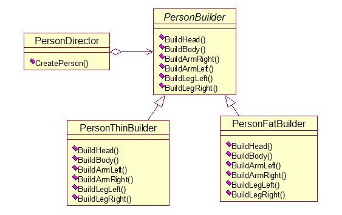

创建型模式：
抽象工厂模式
工厂方法模式
建造者模式
原型模式
单例模式
创建型模式，就是用来创建对象的模式，抽象了实例化的过程。它帮助一个系统独立于如何创建、组合和表示它的那些对象
对于抽象工厂模式和工厂方法模式查看上篇博文设计模式之工厂模式，下面就来介绍一下其余3个模式
建造者模式可以将一个产品的内部表象与产品的生成过程分割开来，从而可以使一个建造过程生成具有不同内部表象的产品对象。如果我们用了建造者模式，那么用户就只需指定需要建造的类型即可，而具体建造的过程和细节就不需要知道了。
个人理解：
建造者模式就是将一个复杂对象的构件过程抽象出来（PersonBuilder），不让任何人遗忘当中的任何一步。然后创建一个指挥者类（Director），用它类控制建造过程，也用它来隔离用户与建造过程的关联
课本实例：建造小人
与工厂方法模式和抽象工厂模式对比：
举例说明：建造超人
工厂方法：通过不同的工厂生产不同的超人，注重的是整体对象的创建方法
建造者：注重的是部件构件的过程，旨在通过一步步的精确构造创建出一个复杂的对象。在这个例子中主要是通过具体建造方法建造超人。
抽象工厂：通过不同的工厂生产一系列超级英雄，注重完整性。
如图：

代码如下：
//抽象类
abstract class personbuilder
{
protected Graphics g;
protected Pen p;
public personbuilder(Graphics g, Pen p)
{
this.g = g;
this.p = p;
}
public abstract void buildhead();
public abstract void buildbody();
public abstract void buildarmleft();
public abstract void buildarmright();
public abstract void buildlegleft();
public abstract void buildlegright();
}
//指挥者
class personDirector
{
private personbuilder pb;
public personDirector(personbuilder pb)
{
this.pb = pb;
}
public void createperson()
{
pb.buildhead();
pb.buildbody();
pb.buildarmleft ();
pb.buildarmright ();
pb.buildlegleft();
pb.buildlegright();
}
}
用原型实例指定创建对象的种类，并且通过拷贝这些原型创建新的对象。原型模式其实就是从一个对象再创建另一个可定制的对象，而且不需要知道任何可创建的细节。
课本实例：简历复印
代码如下：
public object Clone()
{
return (object)this.MemberwiseClone();
}
注：MemberwiseClone()方法是这样，如果字段是值类型，则对该字段执行逐位复制，如果字段是引用类型，则复制引用但不复制引用的对象，因此，原始对象及其复本引用同一对象
总结：
克隆是创建作为当前实例副本的新对象。
克隆分为深度克隆和浅度克隆
深度克隆:会克隆当前实例的所有所有成员.
浅度克隆:只会克隆当前实例的所有值类型的。
浅度克隆Object类为我们提供了一个受保护的克隆方法MemberwiseClone()
深度克隆要我们自己实现
MemberwiseClone方法创建一个浅表副本，具体来说就是创建一个新对象，然后将当前对象的非静态字段复制到该新对象。
个人理解：
浅拷贝和深拷贝
浅拷贝对于引用的内容来说只是复制了地址，然后给地址赋值，但深拷贝的引用内容却是根据每个参数不同来实例出一个新的对象
浅拷贝只是拷贝了引用,指向一个地址空间,而深拷贝是根据参数的不同对这个引用创建新的实例
通常我们可以让一个全局变量使得一个对象被访问，但它不能防止你实例化多个对象。一个最好的办法就是，让类自身负责保存它的唯一实例。这个类可以保证没有其他实例可以被创建，并且它可以提供一个访问该实例的方法。
注意问题：
多线程的程序中，多个线程同时，注意是同时访问Singleton类，调用GetInstance（）方法，会有可能造成创建多个实例的。
线程加锁
lock是确保当一个线程位于代码的临界区时，另一个线程不进入临界区。如果其他线程试图进入锁定的代码，则它将一直等待（即被阻止），直到该对象被释放。
课本实例：只实例化一次工具箱窗体
代码如下：
private FormToolbox()
{
InitializeComponent();
}
public static FormToolbox GetInstance()
{
if (ftb == null || ftb.IsDisposed)
{
lock (syncRoot)
{
if (ftb == null || ftb.IsDisposed)
{
ftb = new FormToolbox();
ftb.MdiParent = Form1.ActiveForm;
}
}
}
return ftb;
}
单例模式：保证一个类仅有一个实例,并提供一个访问它的全局访问点.